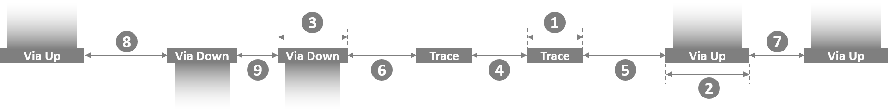
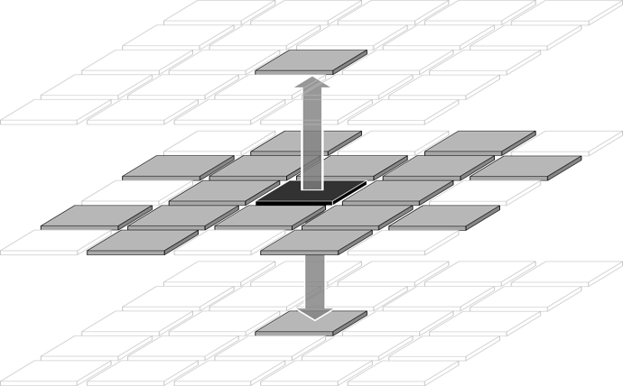
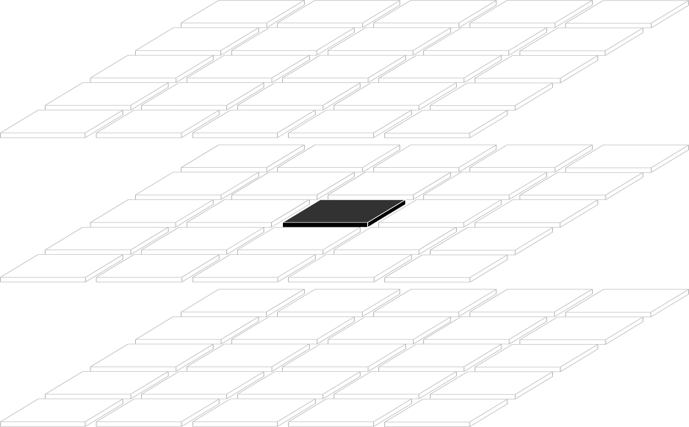
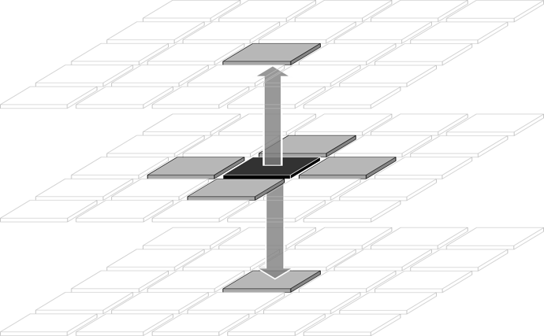
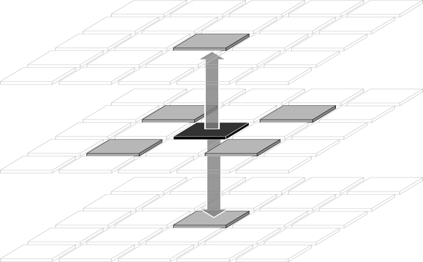
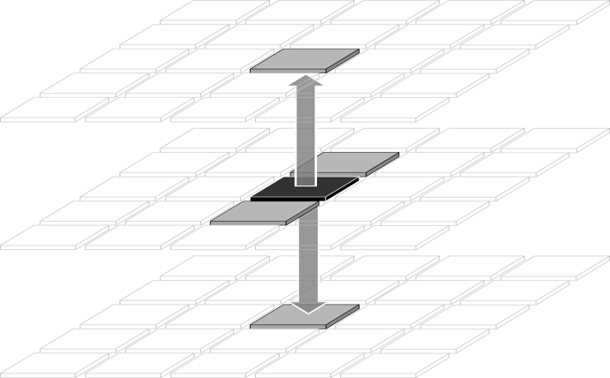
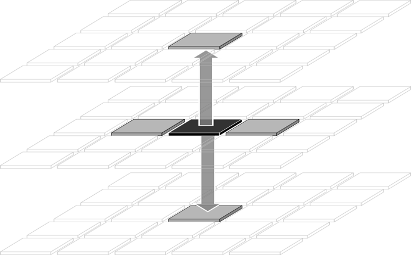
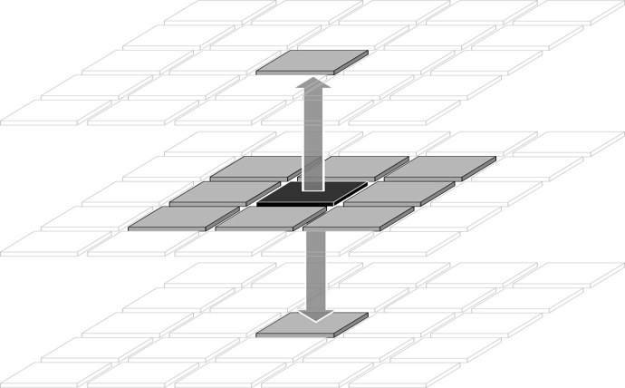
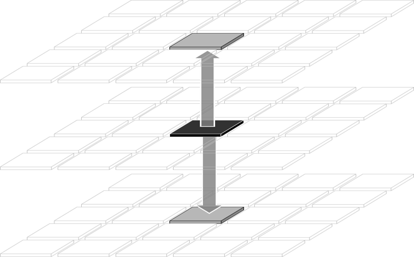
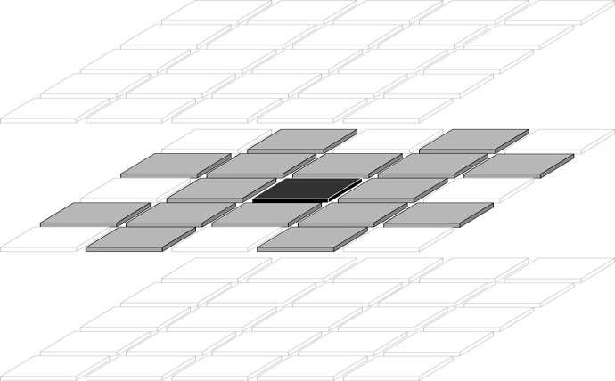

| Home | User Guide | Examples | Download
(from GitHub) |
How It Works |
Acorn uses a simple text file for the netlist, layer definitions, and basic control of the Acorn autorouter.
,) are not
valid delimiters.#) character in the first column of a line
creates a full-line comment.//) anywhere on a line
denote the beginning of a comment that continues to the end of the line.
<N>. Floating-point values
are denoted by <NN.N>.[optional].
|, as in
THIS | THAT.grid_resolutionPurpose: The grid_resolution statement
specifies the size, in microns, of each square cell in the grid.
Syntax: grid_resolution = <NN.N>
Required or Optional: The grid_resolution
statement is required.
Example: grid_resolution = 12.5 // Grid size in
microns
widthPurpose: The width statement specifies the
lateral width, in millimeters, of the entire routing area.
Syntax: width = <NN.N>
Required or Optional: The width
statement is required.
Example: width = 25.25 // 25.25 millimeters
wide
heightPurpose: The height statement specifies the
lateral height, in millimeters, of the entire routing area.
Syntax: height = <NN.N>
Required or Optional: The height
statement is required.
Example: height = 19 // 19 millimeters
high
number_layersPurpose: The number_layers statement
specifies the number of routing layers, excluding the intervening via layers.
Syntax: number_layers = <N>
Required or Optional: The number_layers
statement is required.
Example: number_layers = 4 // Routing layers
M1, M2, M3, and M4
layer_namesPurpose: The layer_names statement
specifies the names for each routing layer and intervening via layer. If there are N
routing layers, as defined in the number_layers statement, then the
layer_names statement must include the names of 2*N - 1
layers, because this list includes the intervening via layers.
Syntax: layer_names = <layerName1>
<layerName2> ...
Required or Optional: The layer_names
statement is required.
Example: layer_names = M1 V12 M2 V23 M3 V34 M4
start_nets and end_nets
Purpose: The start_nets statement denotes
the start of the list of nets. The end of this list is denoted by the
end_nets statement. Up to 1023 nets are allowed, as specified by the
maxNets parameter in file global_defs.h.
Syntax:
start_nets
<netName_1> <startLayer_1> <startX_1> <startY_1> <endLayer_1> <endX_1> <endY_1> [<design_rule_exception_name>] [<diff-pair_partner_net_name>] [PN_swappable]
<netName_2> <startLayer_2> <startX_2> <startY_2> <endLayer_2> <endX_2> <endY_2> [<design_rule_exception_name>] [<diff-pair_partner_net_name>] [PN_swappable]
<netName_3> <startLayer_3> <startX_3> <startY_3> <endLayer_3> <endX_3> <endY_3> [<design_rule_exception_name>] [<diff-pair_partner_net_name>] [PN_swappable]
...
<netName_N> <startLayer_N> <startX_N> <startY_N> <endLayer_N> <endX_N> <endY_N> [<design_rule_exception_name>] [<diff-pair_partner_net_name>] [PN_swappable]
end_netsBetween the start_nets and
end_nets statements, each line contains the following
information about a single net:
The first token, <netName_i>, is the
case-sensitive name of the ith net. The name cannot contain whitespace characters.
The second token, <startLayer_i>, is
the case-sensitive name of the layer on which the ith net starts. This name must
match the name of one of the routing layers in the layer_names
statement.
The third and fourth tokens, <startX_i>
and <startY_i>, are the (X,Y) coordinates of the
start-terminal on layer <startLayer_i> for the
ith net. The units for the (X,Y) coordinates are microns.
The fifth token, <endLayer_i>,
is the case-sensitive name of the layer on which the ith net terminates.
This name must match the name of one of the routing layers in the
layer_names statement.
The sixth and seventh tokens, <endX_i>
and <endY_i>, are the (X,Y) coordinates of the
end-terminal on layer <endLayer_i> for the ith
net. The units for the (X,Y) coordinates are microns.
The optional eighth token,
<design_rule_exception_name>, specifies the name of a
design-rule exception which will be applied to this net. The name of the design-rule
exception must match the name of one of the exception
statements within a design_rule_set block. The
<design_rule_exception_name> token is required
for all differential pair nets, but may also be used for other nets.
The ninth token,
<diff-pair_partner_net_name>, is required only for
differential pairs. This token specifies the case-sensitive net name that is the partner
net of the current differential pair net. This name must exactly match one of the other
<netName_i> names in the list of nets.
The optional tenth token, PN_SWAPPABLE,
specifies that the current net, which must be part of a differential pair, may be swapped
with its partner in order to optimize the physical routing. If one one of the two nets in
a differential pair is marked as PN_SWAPPABLE, then its
partner-net must likewise be marked as PN_SWAPPABLE.
Required or Optional: The block between the
start_nets and
end_nets statements is required.
Example:
start_nets
net1 M1 15 15 M4 95 95
VDD M1 15 25 M4 95 85 PWR_GND
DP1_P M1 15 45 M4 95 60 100_ohm DP1_N
DP1_N M1 15 50 M4 95 65 100_ohm DP1_P
DP2_P M1 15 65 M4 95 30 100_ohm DP2_N PN_swappable
DP2_N M1 15 70 M4 95 25 100_ohm DP2_P PN_swappable
end_netsblock and unblockPurpose: The block statement is used to
prevent routing in a given region. No traces or vias will be routed within the region defined by
the block statement. Further, no traces or vias will be routed in
close proximity such that any part of the trace or via would overlap with the blocked region.
The effect of a block statement can be reversed
with a subsequent unblock statement for a given region. The
unblock statement enables routing in a given region.
Traces and vias may be routed within the region defined by the unblock
statement, which is intended to reverse, or invert, the effects of a previous
block statement. For example, to allow routing only in a circular
region on a given layer, one would first block the entire layer,
and then unblock a circular region on the layer.
Syntax: The block and
unblock statements specify the name of the routing layer,
<layer name>, to which the statements apply.
The remaining tokens in the block and
unblock statements describe which region of the routing
layer is affected by the statements. The region can encompass the entire routing layer
or a subset of the layer in a shape of a rectangle, circle, or triangle, as described below.
To block or
unblock an entire routing layer:
block ALL <layer name>
unblock ALL <layer name>
To block or
unblock a rectangular region on a routing layer
with diagonal corners (X1,Y1) and (X2,Y2), in microns:
block RECT <layer name>
<X1> <Y1> <X2> <Y2>
unblock RECT <layer name> <X1> <Y1>
<X2> <Y2>
The following specifies the block
and unblock syntax for a circular region on a
routing layer with center (X1,Y1) and radius R. A radius of zero will
block or unblock a
single cell at (X1,Y1). All dimensions are in microns.
block CIR <layer name>
<X1> <Y1> <R>
unblock CIR <layer name> <X1> <Y1>
<R>
Specify a triangular region on a routing layer to
block or unblock
with vertices (X1,Y1), (X2,Y2), and (X3,Y3), in microns:
block TRI <layer name>
<X1> <Y1> <X2> <Y2> <X3> <Y3>
unblock TRI <layer name> <X1> <Y1> <X2>
<Y2> <X3> <Y3>
Required or Optional: By default, all regions are available
for routing; the block and
unblock statements are optional.
Example: Example block and
unblock statements are shown below.
BLOCK ALL Die_layer
BLOCK RECT M1_layer 0 0 900 800
BLOCK CIR BGA_layer 200 200 40
BLOCK TRI M2_layer 0 0 100 0 0 100
UNBLOCK ALL Die_layer
UNBLOCK RECT M1_layer 0 0 900 800
UNBLOCK CIR BGA_layer 200 200 40
UNBLOCK TRI M2_layer 0 0 100 0 0 100design_rule_set and
end_design_rule_setPurpose: The design_rule_set statement
denotes the start of a block that defines design rules. The end of this block is denoted by the
end_design_rule_set statement. Such blocks specify a set of design
rules that may be applied to the entire routing area, or to specific regions using
DR_zone statements. These rules specify the trace width, via
diameters, and the minimum allowed spacings between adjacent traces and vias. The rules also
specify the allowed routing directions for traces and vias.
Up to 15 design_rule_set blocks are allowed.
Optionally, exceptions to these rules may be defined for subsets of nets. These exceptions also include the pitch of differential pairs.
Syntax:
design_rule_set <name> [<comment>]
<Design-rule statements, as defined below>
[exception = <design_rule_exception_name_1>
<Design-rule statements, as defined below>
[diff_pair_pitch = <NN.N>]
end_exception]
[exception = <design_rule_exception_name_2>
<Design-rule statements, as defined below>
[diff_pair_pitch = <NN.N>]
end_exception]
...
[exception = <design_rule_exception_name_N>
<Design-rule statements, as defined below>
[diff_pair_pitch = <NN.N>]
end_exception]
end_design_rule_setThe <name> token is a unique identifier
for each of the design-rule blocks. This name must contain no whitespace characters, and is
case-sensitive when referenced elsewhere in the Acorn input file.
The optional <comment> is a set of words
or characters that describe the set of design rules. It may contain whitespace characters. There
is no need for this comment to be unique.
The optional blocks that begin with 'exception ='
and end with 'end_exception' describe net-specific exceptions to
a set of design rules. The case-sensitive name of the exception is linked to nets in the netlist.
Up to 15 exception blocks are allowed within any set of design rules.
However, each exception with a diff_pair_pitch statement
generates an extra exception. In other words, each exception for diff-pair nets counts as two
exceptions towards the 15-exception limit.
The widths and spacings of traces and vias are depicted in the figure below.

Referring to the figure above, the allowed design-rules statements are listed below and are detailed in subsequent sections:
1 |
[line_width = <NN.N>] |
2 |
[via_up_diameter = <NN.N>] |
3 |
[via_down_diameter = <NN.N>] |
4 |
[line_spacing = <NN.N>] |
5 |
[via_up_to_trace_spacing = <NN.N>] |
6 |
[via_down_to_trace_spacing = <NN.N>] |
7 |
[via_up_to_via_up_spacing = <NN.N>] |
8 |
[via_up_to_via_down_spacing = <NN.N>] |
9 |
[via_down_to_via_down_spacing = <NN.N>] |
To limit the direction of routing in the region where a design-rule set applies,
the optional allowed_directions statement is used. It takes one of
nine values:
[allowed_directions = Any | None | Manhattan | X_Routing
| North_South | East_West | Manhattan_X | Up_Down | Any_Lateral]
These direction constraints are illustrated below, in which each diagram represents three routing layers. In each, the black square represents the cell from which routing is progressing. The grey squares represent the cells to which routing is allowed for each constraint.
Any:
All 18 possible directions are allowed, including 16 lateral and 2 vertical
directions. |
None:
No routing is allowed. This is similar to a region that is blocked from
routing. |
Manhattan:
North, south, east, and west directions, plus 2 vertical directions. |
X_Routing:
NE, SE, SW, and NW directions, plus 2 vertical directions. |
North_South:
North and south routing, plus 2 vertical directions. |
East_West:
East and west routing, plus 2 vertical directions. |
Manhattan_X:
N, S, E, W, NE, SE, SW, and NW directions, plus 2 vertical directions. |
Up_Down:
Only vertical routing is allowed though vias. |
Any_Lateral:
All 16 lateral directions are allowed, but no vertical routing through vias is
allowed. |
Required or Optional: The
design_rule_set block is optional.
In the absense of a such a block, or in the absense of one or more design rules,
the default rules below take effect. The value <grid_resolution>
refers to the number of microns specified in the
grid_resolution statement.
line_width = <grid_resolution>
line_spacing = <grid_resolution>
via_up_diameter = <grid_resolution>
via_down_diameter =
<grid_resolution>
via_up_to_trace_spacing =
<grid_resolution>
via_down_to_trace_spacing =
<grid_resolution>
via_up_to_via_up_spacing =
<grid_resolution>
via_down_to_via_down_spacing =
<grid_resolution>
via_up_to_via_down_spacing =
<grid_resolution>
allowed_directions = Any
Example: An example design_rule_set
block is shown below, which includes design rules plus three sets of exceptions.
design_rule_set Package Design Rules for package layers
line_width = 20 // In microns
line_spacing = 20 // In microns
via_up_diameter = 100 // In microns
via_down_diameter = 100 // In microns
via_up_to_trace_spacing = 20 // In microns
via_down_to_trace_spacing = 20 // In microns
via_up_to_via_up_spacing = 40 // In microns
via_down_to_via_down_spacing = 40 // In microns
via_up_to_via_down_spacing = 40 // In microns
allowed_directions = Any // Routing is allowed in any direction
// End of main design rules. What follows are three blocks of exceptions:
exception = PWR_GND // Special rules for wider power/ground nets
line_width = 40 // In microns
allowed_directions = Manhattan_X // Only allow routing at 90- and 45-degree angles
end_exception
exception = 50_ohm // Special rules for 50-ohm differential pairs
line_width = 25 // In microns
line_spacing = 32 // In microns
via_up_to_trace_spacing = 30 // In microns
via_down_to_trace_spacing = 30 // In microns
via_up_to_via_up_spacing = 50 // In microns
via_down_to_via_down_spacing = 50 // In microns
via_up_to_via_down_spacing = 50 // In microns
diff_pair_pitch = 58 // In microns
end_exception
exception = 100_ohm // Special rules for 50-ohm differential pairs
line_width = 35 // In microns
line_spacing = 50 // In microns
via_up_to_trace_spacing = 40 // In microns
via_down_to_trace_spacing = 50 // In microns
via_up_to_via_up_spacing = 50 // In microns
via_down_to_via_down_spacing = 50 // In microns
via_up_to_via_down_spacing = 50 // In microns
diff_pair_pitch = 85 // In microns
end_exception
end_design_rule_setline_widthPurpose: The line_width statement
specifies the width (in microns) of conducting traces in a given design-rule set or an
exception to such design rules.
Syntax: line_width = <NN.N>
Required or Optional: The line_width
statement is optional. The default value is the grid resolution, as specified in the
grid_resolution statement.
Example: line_width = 15.0 // In microns
line_spacingPurpose: The line_spacing statement
specifies the minimum spacing (in microns) between conducting traces in a given design-rule
set or in an exception to such design rules. This spacing can be different than the minimum
spacing between traces and vias.
Syntax: line_spacing = <NN.N>
Required or Optional: The line_spacing
statement is optional. The default value is the grid resolution, as specified in the
grid_resolution statement.
Example: line_spacing = 20 // In microns
via_up_diameterPurpose: The via_up_diameter statement
specifies the diameter (in microns) of upward-going vias in a given design-rule set or an
exception to such design rules.
Syntax: via_up_diameter = <NN.N>
Required or Optional: The via_up_diameter
statement is optional. The default value is the grid resolution, as specified in the
grid_resolution statement.
Example: via_up_diameter = 45.0 // In
microns
via_down_diameterPurpose: The via_down_diameter statement
specifies the diameter (in microns) of downward-going vias in a given design-rule set or an
exception to such design rules.
Syntax: via_down_diameter = <NN.N>
Required or Optional: The via_down_diameter
statement is optional. The default value is the grid resolution, as specified in the
grid_resolution statement.
Example: via_down_diameter = 45.0
// In microns
via_up_to_trace_spacingPurpose: The via_up_to_trace_spacing
statement specifies the minimum spacing (in microns) between upward-going vias and conducting
traces in a given design-rule set or in an exception to such design rules. This spacing can
be different than the spacing between traces and other traces.
Syntax: via_up_to_trace_spacing = <NN.N>
Required or Optional: The
via_up_to_trace_spacing statement is optional. The default
value is the grid resolution, as specified in the grid_resolution statement.
Example: via_up_to_trace_spacing = 37.5
// In microns
via_down_to_trace_spacingPurpose: The via_down_to_trace_spacing
statement specifies the minimum spacing (in microns) between downward-going vias and conducting
traces in a given design-rule set or in an exception to such design rules. This spacing can
be different than the spacing between traces and other traces.
Syntax: via_down_to_trace_spacing =
<NN.N>
Required or Optional: The
via_down_to_trace_spacing statement is optional. The default
value is the grid resolution, as specified in the grid_resolution
statement.
Example: via_down_to_trace_spacing = 47
// In microns
via_up_to_via_up_spacingPurpose: The via_up_to_via_up_spacing
statement specifies the minimum spacing (in microns) between upward-going vias in a given
design-rule set or in an exception to such design rules. This spacing can be different than
the spacing between upward-going vias and other types of shapes, i.e., traces or
downward-going vias.
Syntax: via_up_to_via_up_spacing = <NN.N>
Required or Optional: The
via_up_to_via_up_spacing statement is optional. The default
value is the grid resolution, as specified in the grid_resolution
statement.
Example: via_up_to_via_up_spacing = 25.0
// In microns
via_down_to_via_down_spacingPurpose: The via_down_to_via_down_spacing
statement specifies the minimum spacing (in microns) between downward-going vias in a given
design-rule set or in an exception to such design rules. This spacing can be different than
the spacing between downward-going vias and other types of shapes, i.e., traces or
upward-going vias.
Syntax: via_down_to_via_down_spacing =
<NN.N>
Required or Optional: The
via_down_to_via_down_spacing statement is optional. The
default value is the grid resolution, as specified in the
grid_resolution statement.
Example: via_down_to_via_down_spacing = 62.5
// In microns
via_up_to_via_down_spacingPurpose: The via_up_to_via_down_spacing
statement specifies the minimum spacing (in microns) between upward- and downward-going vias in
a given design-rule set or in an exception to such design rules. This spacing can be different
than the spacing between other pairs of shapes, e.g., between two upward-going vias.
Syntax: via_up_to_via_down_spacing =
<NN.N>
Required or Optional:
The via_up_to_via_down_spacing statement is optional. The
default value is the grid resolution, as specified in the
grid_resolution statement.
Example: via_up_to_via_down_spacing = 30.0
// In microns
exception and
end_exceptionPurpose: The exception statement
denotes the start of a block that defines net-specific design rules that can differ from
the rules that would ordinarily apply. The end_exception
statement denotes the end of this block, which can only be located within a
design_rule_set block.
The name of the exception is linked to nets in the netlist. These exceptions specify the trace width, via diameters, and the minimum allowed spacings between adjacent traces and vias. The rules also specify the allowed routing directions for traces and vias. In the case of differential pairs, the exceptions specify the pitch of these pairs.
Up to 15 exception blocks are allowed within any set of design rules.
However, each exception with a diff_pair_pitch statement
generates an extra exception. In other words, each exception for diff-pair nets counts
as two exceptions towards the 15-exception limit.
Syntax:
exception = <name>
<Design-rule statements, as defined above>
[diff_pair_pitch = <NN.N>]
end_exceptionThe <name> token is a unique identifier
for each of the exception blocks within a design_rule_set block.
This name must contain no whitespace characters, and is case-sensitive when referenced elsewhere
in the Acorn input file.
The diff_pair_pitch statement specifies
the pitch, in microns, of differential pairs. This statement is unique to
exception statements. Therefore, differential pair nets
cannot be used without having at least one exception block
and at least one accompanying diff_pair_pitch statement.
Required or Optional: The
exception block is optional unless the netlist
contains differential pair nets, in which case the
exception block is required.
In the absense of one or more design rules within an
exception block, the missing design rules take
on the values of those specified in the enclosing
design_rule_set block.
Example: An example exception block
is shown below, which includes width and spacing rules, plus the pitch of differential pairs.
exception = 50_ohm // Special rules for 50-ohm differential pairs
line_width = 25 // In microns
line_spacing = 32 // In microns
via_up_to_trace_spacing = 30 // In microns
via_down_to_trace_spacing = 30 // In microns
via_up_to_via_up_spacing = 50 // In microns
via_down_to_via_down_spacing = 50 // In microns
via_up_to_via_down_spacing = 50 // In microns
diff_pair_pitch = 58 // In microns
end_exceptiondiff_pair_pitchPurpose: The diff_pair_pitch statement
specifies the pitch (in microns) of the two conducting traces of a differential pair in a given
design-rule exception. This statement may only be placed between
the exception and end_exception
statements.
Syntax: diff_pair_pitch = <NN.N>
Required or Optional: The diff_pair_pitch
statement is optional unless the exception block is
associated with differential pair nets in the netlist. In other words, the
diff_pair_pitch statement is required only if the
enclosing exception block is associated with differential
pair nets in the netlist.
Example: diff_pair_pitch = 58.0
// In microns
DR_zonePurpose: The DR_zone statement
specifies a region in which a design-rule set applies in the map. If multiple
DR_zone statements define conflicting design-rule sets
for a given region of the map, then the last DR_zone
statement takes precedence.
Syntax: The DR_zone statement specifies
the name of the design-rule set, <DR name>. This name must
match a name defined in a design_rule_set statement. The
DR_zone statement specifies the name of the routing layer,
<layer name>, to which the design rules apply.
The remaining tokens in the DR_zone statement
describe which region of the routing layer is affected by the design rules. The region can
encompass the entire routing layer or a subset of the layer in a shape of a rectangle,
circle, or triangle, as described below.
To specify the design-rule set for an entire routing layer:
DR_zone <DR name> <layer name>
ALL
To specify the design-rule set for a rectangular region on a routing layer with diagonal corners (X1,Y1) and (X2,Y2), in microns:
DR_zone <DR name> <layer name>
RECT <X1> <Y1> <X2> <Y2>
The following syntax specifies the design-rule set for a circular region on a routing layer with center (X1,Y1) and radius R. A radius of zero will apply the design-rule to a single cell at (X1,Y1), in microns.
DR_zone <DR name> <layer name>
CIR <X1> <Y1> <R>
Specify the design-rule set for a triangular region on a routing layer with vertices (X1,Y1), (X2,Y2), and (X3,Y3), in microns:
DR_zone <DR name> <layer name>
TRI <X1> <Y1> <X2> <Y2> <X3>
<Y3>
Required or Optional: The DR_zone
statement is optional. By omitting this statement, the entire map will use the default
design-rule set. Likewise, if any regions of the map are not specified by a
DR_zone statement, then the default design-rule set will
apply to these regions. The default design-rule set is the one defined in the first
design_rule_set statement.
Example: Example DR_zone
statements are shown below.
DR_zone Die_rules Die_layer ALL // Use 'Die_rules' everywhere on layer 'Die_layer'
DR_zone M1_rules M1_layer RECT 0 0 900 800 // Use 'M1_rules' in 900x800 micron rectangular region on layer 'M1_layer'
DR_zone BGA_rules BGA_layer CIR 200 200 40 // Use 'BGA_rules' in circular region on layer 'BGA_layer'
DR_zone M2_rules M2_layer TRI 0 0 100 0 0 100 // Use 'M2_rules' in triangular region in lower-left corner of layer 'M2_layer'Each length of lateral routing has a default cost which Acorn attempts to
minimize. Likewise, each via (or vertical route) has a default cost, which is partly defined
by the vertCost parameter. For both lateral and vertical routing,
the default costs apply globally to the entire map. However, the user may increase these
default costs in specific areas using the statements described in this section. Increasing the
routing costs in a region has the effect of reducing the routing in that region.
trace_cost_multiplier and
trace_cost_zonePurpose: The trace_cost_multiplier
and trace_cost_zone statements increase the cost of lateral
traces in a specific region. Relative to the baseline (non-increased) cost, the cost increase
is an integer multiple, e.g., 2, 5, 10, 25, etc.
Trace_cost_multiplier statements define up
to 15 distinct multipliers, each associated with a multiplier index from 1 to 15.
Trace_cost_zone statements define regions in
the routing map where each cost-multiplier is applied, referenced by its index. If multiple
trace_cost_zone statements define conflicting costs for a given
region of the map, then the last trace_cost_zone statement
takes precedence.
Index #0 is automatically associated with the default cost-multiplier of 1.
Index #0 may be used in a trace_cost_zone statement to reverse
the cost increase of a previous trace_cost_zone statement for a
given region.
Syntax: The trace_cost_multiplier
statement associates the user-defined cost-multiplier, <cost multiplier>,
with a user-defined index, <multiplier index>:
trace_cost_multiplier
<multiplier index> <cost multiplier>
The trace_cost_zone statement associates
a <multiplier index> (defined in a
trace_cost_multiplier statement), with a region on a given
routing layer with name <layer name>. The region can encompass the entire
routing layer or a subset of the layer in a shape of a rectangle, circle, or triangle, as
described below.
To define an entire routing layer to have increased trace costs:
trace_cost_zone <multiplier index>
<layer name> ALL
To increase the trace cost of a rectangular region on a routing layer with diagonal corners (X1,Y1) and (X2,Y2), in microns:
trace_cost_zone <multiplier index>
<layer name> RECT <X1> <Y1> <X2> <Y2>
To increase the trace cost of a circular region on a routing layer with center (X1,Y1) and radius R, in microns:
trace_cost_zone <multiplier index>
<layer name> CIR <X1> <Y1> <R>
To increase the trace cost of a triangular region on a routing layer with vertices (X1,Y1), (X2,Y2), and (X3,Y3), in microns.
trace_cost_zone <multiplier index>
<layer name> TRI <X1> <Y1> <X2> <Y2>
<X3> <Y3>
Required or Optional: The trace_cost_zone
statement is optional. If no trace_cost_zone statement is
used, then all regions will use the default cost for routing traces.
The trace_cost_multiplier statement is
required only if a trace_cost_zone statements references a
non-zero <multiplier index>.
Example: Example trace_cost_multiplier
and trace_cost_zone statements are shown below.
trace_cost_multiplier 1 20 // Index #1 defined as a 20x cost-multiplier
trace_cost_multiplier 2 40 // Index #2 defined as a 40x cost-multiplier
trace_cost_zone 1 Die_layer ALL // Increase cost by 20x for entire Die_layer over baseline cost
trace_cost_zone 2 Die_layer CIR 200 200 40 // Increase cost by 40x for circle over baseline cost
trace_cost_zone 0 Die_layer RECT 0 0 50 100 // Revert to baseline cost for rectangular region
trace_cost_zone 1 M1_layer TRI 0 0 0 50 50 0 // Increase cost by 20x for triangular region of M1_layer
via_cost_multiplier and
via_cost_zonePurpose: The via_cost_multiplier
and via_cost_zone statements increase the cost of vertical
routing, i.e., vias, in a specific region. Relative to the baseline (non-increased) cost, the cost
increase is an integer multiple, e.g., 2, 5, 10, 25, etc.
Via_cost_multiplier statements define up
to 7 distinct multipliers, each associated with a multiplier index from 1 to 7.
Via_cost_zone statements define regions in
the routing map where each cost-multiplier is applied, referenced by its index. If multiple
via_cost_zone statements define conflicting costs for a given
region of the map, then the last via_cost_zone statement
takes precedence.
Index #0 is automatically associated with the default cost-multiplier of 1.
Index #0 may be used in a via_cost_zone statement to reverse
the cost increase of a previous via_cost_zone statement for a
given region.
Syntax: The via_cost_multiplier
statement associates the user-defined cost-multiplier, <cost multiplier>,
with a user-defined index, <multiplier index>:
via_cost_multiplier
<multiplier index> <cost multiplier>
The via_cost_zone statement associates
a <multiplier index> (defined in a
via_cost_multiplier statement), with a region on a given
via layer with name <layer name>. The region can encompass the entire
via layer or a subset of the layer in a shape of a rectangle, circle, or triangle, as
described below.
To define an entire via layer to have increased via costs:
via_cost_zone <multiplier index>
<layer name> ALL
To increase the via cost of a rectangular region on a via layer with diagonal corners (X1,Y1) and (X2,Y2), in microns:
via_cost_zone <multiplier index>
<layer name> RECT <X1> <Y1> <X2> <Y2>
To increase the via cost of a circular region on a via layer with center (X1,Y1) and radius R, in microns:
via_cost_zone <multiplier index>
<layer name> CIR <X1> <Y1> <R>
To increase the via cost of a triangular region on a via layer with vertices (X1,Y1), (X2,Y2), and (X3,Y3), in microns.
via_cost_zone <multiplier index>
<layer name> TRI <X1> <Y1> <X2> <Y2>
<X3> <Y3>
Required or Optional: The via_cost_zone
statement is optional. If no via_cost_zone statement is
used, then all regions will use the default cost for vias.
The via_cost_multiplier statement is
required only if a via_cost_zone statements references a
non-zero <multiplier index>.
Example: Example via_cost_multiplier
and via_cost_zone statements are shown below.
via_cost_multiplier 1 20 // Index #1 defined as a 20x cost-multiplier
via_cost_multiplier 2 40 // Index #2 defined as a 40x cost-multiplier
via_cost_zone 1 C4_via ALL // Increase cost by 20x for entire C4_via layer over baseline cost
via_cost_zone 2 C4_via CIR 200 200 40 // Increase cost by 40x for circle over baseline cost
via_cost_zone 0 C4_via RECT 0 0 50 100 // Revert to baseline cost for rectangular region
via_cost_zone 1 V1-2_layer TRI 0 0 0 50 50 0 // Increase cost by 20x for triangular region of V1-2_layer
Pin-swap zones are special, user-defined regions with the following properties:
pin_swap and
no_pin_swapPurpose: The pin_swap and
no_pin_swap statements, respectively, define and undefine
regions that have near-zero routing costs, and in which all terminals become pin-swappable.
If multiple pin_swap statements create contiguous or
overlapping zones (either horizontally or vertically), then these zones are merged into a
single zone. Non-contiguous pin-swap regions are treated as separate pin-swap regions.
The only nets that can route through a contiguous pin-swap region are those that have a
terminal in such regions. Other nets are prohibited from entering pin-swap regions.
A net is not allowed to have both of its terminals in a pin-swap region. The effect
of a pin_swap statement can be reversed with a subsequent
no_pin_swap statement for a given region.
Syntax: The pin_swap
statement defines a region on a given routing layer <layer name>
as a pin-swap region . The region can encompass the entire routing layer or a subset of
the layer in a shape of a rectangle, circle, or triangle, as described below.
To define or undefine an entire routing layer as a pin-swap region:
pin_swap
<layer name> ALL
no_pin_swap <layer name>
ALL
To define or undefine a rectangular region as a pin-swap region on a routing layer with diagonal corners (X1,Y1) and (X2,Y2), in microns:
pin_swap
<layer name> RECT <X1> <Y1> <X2>
<Y2>
no_pin_swap <layer name> RECT
<X1> <Y1> <X2> <Y2>
To define or undefine a circular region as a pin-swap region on a routing layer with center (X1,Y1) and radius R, in microns:
pin_swap
<layer name> CIR <X1> <Y1> <R>
no_pin_swap <layer name>
CIR <X1> <Y1> <R>
To define or undefine a triangular region as a pin-swap region on a routing layer with vertices (X1,Y1), (X2,Y2), and (X3,Y3), in microns:
pin_swap
<layer name> TRI <X1> <Y1>
<X2> <Y2> <X3> <Y3>
no_pin_swap <layer name> TRI <X1> <Y1>
<X2> <Y2> <X3> <Y3>
Required or Optional: The pin_swap
statement is optional. If no pin_swap statement is
used, then all regions follow normal rules for routing cost and design-rule violations.
Example: Example pin_swap
and no_pin_swap statements are shown below.
pin_swap PCB_top ALL // These two statements define the perimeter (only)
no_pin_swap PCB_TOP RECT 30 30 970 970 // of the PCB_TOP layer as a pin-swap region.
pin_swap DIE_LAYER CIR 200 200 40 // Define circular region on layer DIE_LAYER as a pin-swap region.
pin_swap Pkg_M1 TRI 20 20 20 50 50 20 // Define triangular region on layer Pkg_M1 as a pin-swap region.maxIterationsPurpose: The maxIterations statement
specifies the maximum number of iterations to be performed. Acorn will exit after this
number of iterations, regardless of whether a sufficient number of iterations were achieved
without design-rule violations.
Syntax: maxIterations = <N>
Required or Optional: The maxIterations
statement is optional. The default value is 2000 iterations, as specified by parameter
defaultMaxIterations in file global_defs.h.
Example: maxIterations = 500
omit_layers_from_composite_imagesPurpose: The
omit_layers_from_composite_images statement omits selected
trace and/or via layers from the composite (PNG) image files that are displayed in certain web
pages. In such web pages, omitting these layers with this statement hides them in the
animated routing evolution of the entire map
Syntax: omit_layers_from_composite_images =
<layerName 1> <layerName 2> ...
Required or Optional: The
omit_layers_from_composite_images statement is optional.
Omitting this statement will result in all layers being displayed in the composite (PNG) image
files that are displayed in certain web pages.
Example: omit_layers_from_composite_images
= Pass_via UBM C4 V4-5
preEvaporationIterationsPurpose: The
preEvaporationIterations statement defines the number of
iterations before which no congestion is evaporated from the map. The minimum allowed value
for this value is 2, which prevents evaporation of congestion until after the third iteration.
Syntax: preEvaporationIterations = <N>
Required or Optional: The
preEvaporationIterations statement is optional. The default
value is 2 iterations.
Example: preEvaporationIterations = 5
// Delay the evapration of congestion until after the 6th iteration.
vertCostPurpose: The vertCost statement
specifies the lateral distance, in microns, that Acorn should laterally route a trace
around an obstacle rather than creating vias to route above/below
the obstacle. Larger values of vertCost result in routing
with fewer vias
Syntax: vertCost = <NN.N>
Required or Optional: The vertCost
statement is optional. The default value is calculated based on the lateral dimensions
of the routing area. Specifically, the default value is one fourth of the square root of
the area:
(√ width x height ) / 4,
expressed in microns.
Example: vertCost = 1500 // 1500 microns
violationFreeThresholdPurpose: The violationFreeThreshold
statement specifies an additional number of iterations that must be free of design-rule
violations, in addition to the minimum value enforced by Acorn, which is
35∙log10(Nnets), where Nnets is
the number of nets. For example, if the netlist contains 100 nets, then Acorn will require
at least 70 iterations [35∙log10(100)] to be free of design-rule violations
before terminating. If the user desires 100 such iterations, however, then the
statement 'violationFreeThreshold = 30' may be used
to force Acorn to achieve a total of 100 iterations that are free of design-rule
violations.
Syntax: violationFreeThreshold = <N>
Required or Optional: The
violationFreeThreshold statement is optional. The
default value is 0 iterations, as specified by parameter
defaultDRCfreeThreshold in file global_defs.h.
Example: violationFreeThreshold = 30
iterationsPerPngMapPurpose: The iterationsPerPngMap
statement specifies the number of iterations between creating (PNG) images of the routing. This
feature was intended to reduce run-times by eliminating the creation of PNG files for selected
iterations. However, this option is not aligned with other parts of the Acorn code that assume
that PNG files are generated for every iteration.
Syntax: iterationsPerPngMap = <N>
Required or Optional: The iterationsPerPngMap
statement is optional. The default value is 1 iteration. That is, omitting this
statement will cause Acorn to create PNG image-files for every iteration.
Example: iterationsPerPngMap = 10
originPurpose: The origin statement
specifies the origin of the routing map. This feature is not yet implemented. Consequently,
the origin is fixed at the lower-left corner of the routing map.
Syntax: origin = center |
lower_left | upper_left | lower_right | upper_right
Required or Optional: The origin
statement is optional. The default value is lower_left. However, specifying
other options for the origin (e.g., center) has no effect.
Example: origin = lower_left